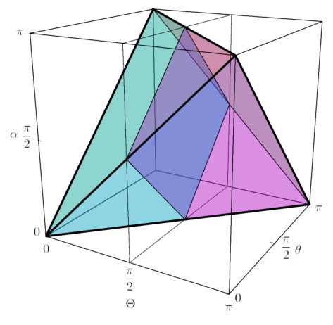
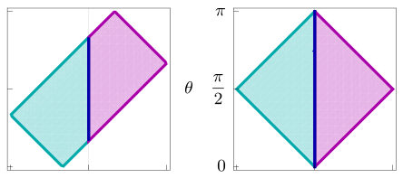
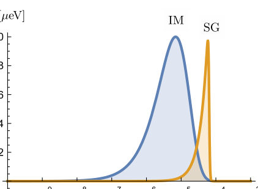
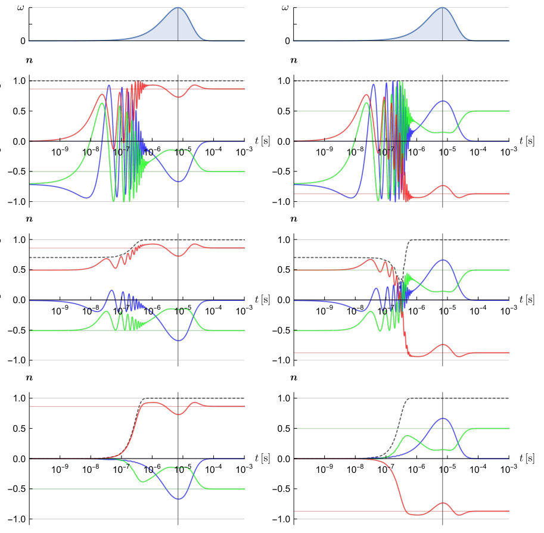

← Index · ← Previous · Next →
Authors: Jakub Rembieliński, Karol Ławniczak
Type: theory · Category: other · PDF: https://arxiv.org/pdf/2605.13756v1
Analysis basis: full PDF text, analyzed in chunks
Topic relevance: 🔥 quantum measurements 4/5 · methods for driven-dissipative 2/5




Summary. This paper replaces the instantaneous von Neumann collapse with a continuous quasilinear evolution that describes state reduction as a smooth dynamical process. The proposed model preserves fundamental quantum principles like the no-signaling principle and the Born rule while identifying specific parameter regimes where the model might deviate from standard theory, offering potential experimental tests.
Why it may be interesting. It offers a novel way to unify unitary evolution with measurement-induced reduction through a continuous nonlinear dynamical process, which is highly relevant to the foundations of open quantum systems and measurement theory.
Main problem. Addressing the conceptual issues of the von Neumann projection postulate, specifically the instantaneous and discontinuous nature of state collapse.
Main result. The authors propose a quasilinear evolution that provides a continuous, deterministic description of state reduction that is consistent with the no-signaling principle and the Born rule.
Method. The study uses a nonlinear generalization of the von Neumann equation, employing Bloch-vector representation, SL(2,C) group invariants, and numerical simulations of Riccati-type equations.
Model / system. A two-level quantum system (qubit) undergoing evolution driven by a time-dependent potential, with specific applications to the Stern-Gerlach experiment.
Key observables. Spin projection (observable Omega), Bloch vector trajectories, and the rate of change of the state vector.
Important parameters / regimes. The driving potential magnitude (g0), the orientation angle (Theta), and the Casimir invariants (C1, C2) of the evolution.
Assumptions / limitations. The validity of the model relies on the preservation of ensemble equivalence to ensure consistency with Einstein causality.
Figures summary. Figures illustrate the parameter space as a tetrahedron, the evolution of Bloch vectors under different potentials (Morse and Stern-Gerlach), and the rate of state change in various regimes.
Paper structure. The paper introduces the quasilinear framework, proves its consistency with no-signaling and the Born rule, analyzes the dynamics of two-level systems using geometric invariants, explores structural instability and experimental testability, and applies the model to the Stern-Gerlach experiment.
In this article, we introduce a new form of quantum selective measurement in which the von Neumann projection postulate is replaced by quasilinear evolution, governed by a nonlinear generalization of the von Neumann equation. We demonstrate that this equation preserves the equivalence of quantum ensembles and, consequently, satisfies the no-signalling principle, ensuring consistency with both quantum mechanics and Einstein causality. Our approach eliminates the need for instantaneous, discontinuous state collapse and provides a unified description of the postmeasurement quantum state reduction as a form of quantum state evolution. Notably, it does not require invoking concepts such as the quantum state assigned to a classical apparatus. At the same time, the stochastic character of selective measurement and the Born rule remain unchanged. We present several numerical solutions of the evolution equation for quasilinear selective measurement in two-level quantum systems and compare them with the standard von Neumann projection. The results demonstrate agreement between the two measurement schemes in their fundamental properties. Furthermore, we investigate phenomena associated with the structural instability of the evolution equation and identify very narrow parameter regions in which the outcomes deviate from those predicted by the von Neumann projection. These regions may offer opportunities to test the proposed approach experimentally. Finally, using specific analytical solutions, we discuss the Stern-Gerlach experiment within the framework of quasilinear measurement.
Authors: Esra Yeniaras, Muhammad Amin Karimov
Type: both · Category: quantum information and computing · PDF: https://arxiv.org/pdf/2605.13109v1
Analysis basis: full PDF text, analyzed in chunks
Topic relevance: 🔥 QC/QI experiment 4/5 · quantum measurements 1/5
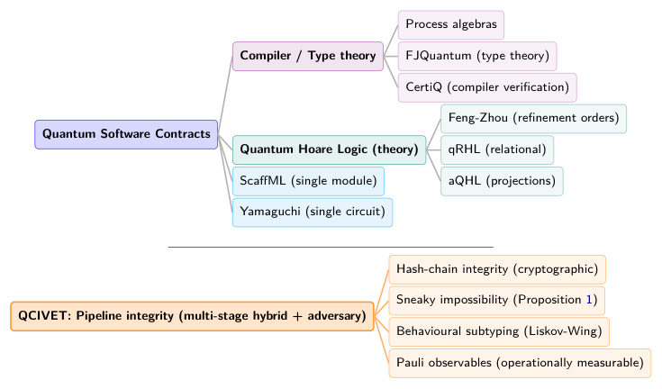
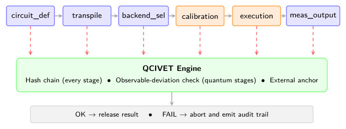
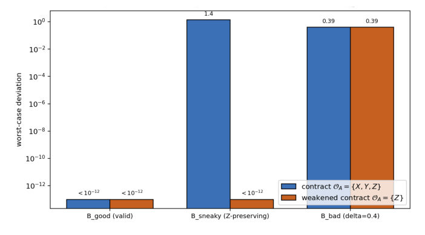
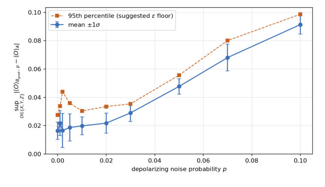
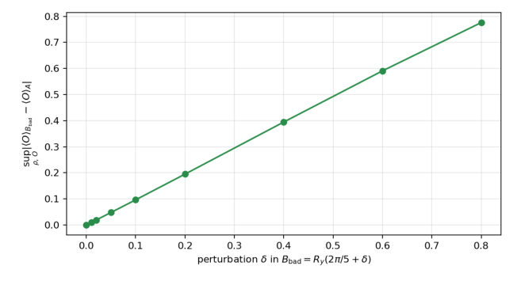
Summary. The paper introduces QCIVET, a framework designed to verify that the quantum stages of a hybrid computing pipeline behave according to their intended specifications. It bridges the gap between classical supply-chain security and quantum hardware noise by using observable-based contracts to detect malicious or erroneous circuit substitutions. The framework was successfully validated on real IBM quantum hardware, demonstrating its ability to catch 'sneaky' attacks that pass simple verification tests.
Why it may be interesting. not directly relevant
Main problem. Ensuring the integrity and auditability of hybrid quantum-classical pipelines against adversarial threats like specification tampering, hardware-level poisoning, and 'sneaky' circuit substitutions that bypass classical verification.
Main result. The QCIVET framework successfully detects 'sneaky-subtype' attacks and hardware drift on real IBM Heron processors, providing a low-latency, hardware-validated runtime audit mechanism.
Method. A dual-layer auditing approach using hash-chained audit trails for structural integrity and calibrated observable-deviation tests based on Liskov-Wing behavioral subtyping for semantic integrity.
Model / system. Hybrid quantum-classical pipelines involving quantum subroutines (e.g., VQE, quantum kernels) executed on IBM Quantum processors, specifically the ibm_fez (Heron r2) and Eagle r3 architectures.
Key observables. Self-adjoint operators (Pauli expectation values) used for observable-deviation contracts and informationally complete observable families.
Important parameters / regimes. Error tolerance threshold (epsilon), diamond-norm distance between quantum channels, and classical commit latency (sub-millisecond).
Assumptions / limitations. Assumes the adversary cannot forge external anchors or SHA-256 hashes, and that the observable family used for verification is sufficiently informationally complete.
Figures summary. Figures include a landscape map of quantum software contracts, a calibration window showing noise floor vs. logical deviation, and visualizations of various hash-chain tampering scenarios.
Paper structure. The paper identifies the integrity gap in hybrid pipelines, proposes the QCIVET framework, provides formal proofs for soundness and completeness, demonstrates experimental validation on real IBM hardware across three application domains (VQE, fraud detection, cloud auditing), and compares the framework against existing classical and quantum security literature.
Hybrid quantum--classical pipelines increasingly support applications such as drug discovery, fraud detection, and cloud quantum processing unit (QPU) auditing, yet existing integrity-verification methods remain largely classical and fail to capture quantum-stage behaviour. We propose QCIVET, a contract-based integrity-verification framework that models a hybrid pipeline as a sequence of stages with explicit specifications and audits it at both syntactic and semantic levels. Syntactic integrity is enforced through a hash-chained audit trail with optional external anchoring, while semantic integrity at quantum stages is verified using a calibrated observable-deviation test grounded in the behavioural-subtyping discipline of Liskov and Wing. We prove soundness under the diamond-norm distance between quantum channels, conditional completeness for informationally complete observable families, and compositionality under inheritance chains. We further identify a class of Z-only-sneaky overrides that evade weak single-Pauli contracts but are exposed by multi-Pauli contracts. The framework is evaluated under calibration-derived noise models from IBM Quantum Eagle r3 and Heron r2 processors, and the subtype-separation protocol is validated end-to-end on a real ibm_fez (Heron r2) processor. QCIVET is instantiated on three representative applications: variational quantum eigensolver (VQE) for drug discovery, quantum-assisted fraud detection, and customer-side auditing of cloud QPU services. The reference implementation, including a real-time verification engine with sub-millisecond per-stage commit latency, is released as open source.
Authors: Milana Bazayeva, Abigail McClain Gomez, Kenneth M. Merz
Type: both · Category: quantum information and computing · PDF: https://arxiv.org/pdf/2605.12614v1
Analysis basis: full PDF text, analyzed in chunks
Topic relevance: 🔥 QC/QI experiment 4/5
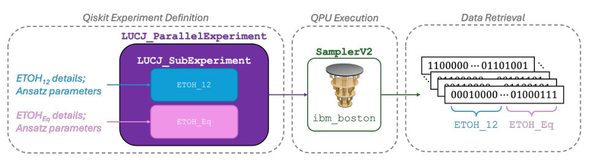
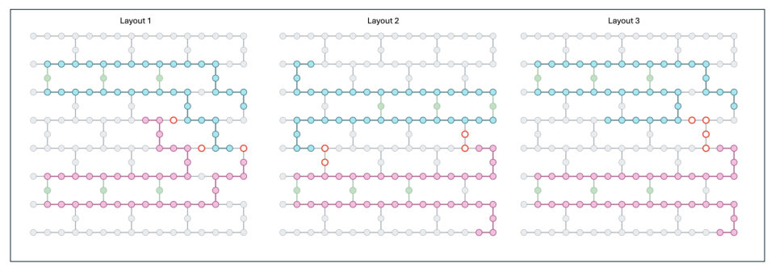

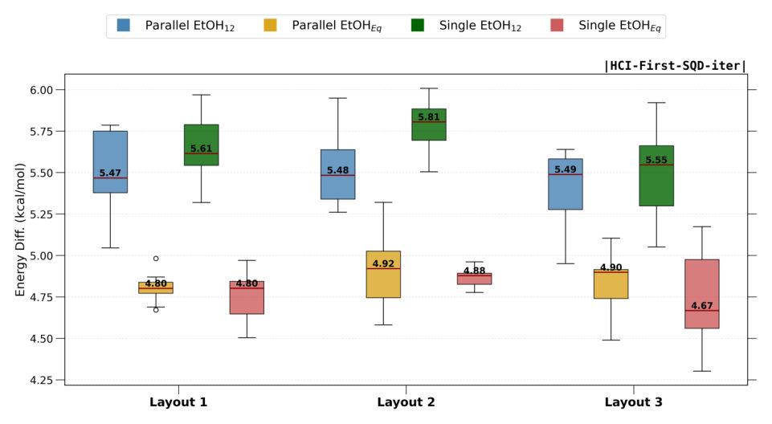
Summary. The paper introduces a quantum multi-programming framework designed to run multiple quantum chemistry circuits simultaneously on a single QPU to increase throughput. By using a robust post-processing protocol (SQD/ext-SQD), the authors demonstrate that the accuracy of molecular energy estimations can be maintained despite the increased hardware cross-talk associated with parallel execution.
Why it may be interesting. not directly relevant
Main problem. How to maximize quantum hardware throughput on cloud platforms via multi-programming without allowing hardware cross-talk to degrade the accuracy of quantum chemistry simulations.
Main result. The proposed multi-programming framework effectively mitigates cross-talk-induced noise, achieving energy deviations from the classical reference as low as 0.001 kcal/mol at the final SQD iteration.
Method. Development of a novel parallel experiment class for the LUCJ ansatz using Qiskit, combined with Sample-based Quantum Diagonalization (SQD) and its extended version (ext-SQD) for error mitigation.
Model / system. Simulated ethanol molecules in two configurations: equilibrium (EtOHEq) and a stretched O-H bond (EtOH1.2), executed on the IBM Quantum ibm_boston QPU.
Key observables. Ground-state energy deviation relative to the Heat-bath Configuration Interaction (HCI) reference.
Important parameters / regimes. Qubit layouts (serial vs. parallel), number of ancilla qubits (2 to 5), and SQD sample sizes (1K, 3K, and 5K).
Assumptions / limitations. Manual qubit partitioning was used; circuits are kept at a single repetition; the HCI method is assumed to be a reliable ground-truth reference.
Figures summary. Figure 1 shows the multi-programming workflow; Figure 2 illustrates different qubit layouts with buffers; Figure 3 displays the distribution of energy deviations across layouts and modes; Table 1 and 2 summarize energy errors at different SQD stages and sample sizes.
Paper structure. Introduction to resource management challenges, description of the multi-programming framework and LUCJ ansatz, experimental setup on IBM hardware, results comparing serial vs. parallel execution, and an analysis of sampling convergence and ancilla scaling.
In the context of quantum computing, efficient resource management is crucial for optimizing throughput on cloud-based platforms and maximizing hardware utilization. In the present work, we propose an approach to tackle quantum chemistry problems via quantum multi-programming of the Local Unitary Cluster Jastrow (LUCJ) ansätze. The ground-state energy of the molecular system is obtained via Sample-based quantum diagonalization (SQD), further refined by its extended version (ext-SQD). Building upon the Qiskit Experiments package, which already supports parallel execution functionality for general tasks, we developed a novel parallel experiment class tailored for quantum chemistry problems. Cross-talk is a known issue in the multi-programming frameworks and can corrupt the ground-energy estimation of the simulated systems. To assess its impact within our approach, we simulated two conformations of the ethanol molecule: one at the equilibrium state (EtOH$_{Eq}$), and one with the O-H bond stretched to 1.2 ${Å}$ (EtOH$_{1.2}$). We defined three different layouts that we executed in a randomized fashion, alternating serial and parallel execution within 10 independent replicates. The single modality of each circuit was kept as a baseline to evaluate the effect of cross-talk induced by quantum multi-programming. The energies obtained at the first-, last- and ext-SQD iteration were compared to the classical Heat-bath Configuration Interaction (HCI) reference. Our findings highlight the viability of a quantum multi-programming workflow for quantum chemistry as the robust post-processing protocol effectively mitigates possible cross-talk induced noise. At the final step of the configuration recovery process, the energy difference relative to the HCI reference is negligible, within 0.001 kcal/mol.
Authors: Sergey Alyatkin, Yaroslav V. Kartashov, Kirill Sitnik, Philipp Grigoryev, Pavlos G. Lagoudakis
Type: experiment · Category: quantum gases · PDF: https://arxiv.org/pdf/2605.13206v1
Analysis basis: full PDF text, analyzed in chunks
Topic relevance: analog quantum simulation 3/5 · correlated cavity matter 3/5 · driven-dissipative phase transition 3/5 · non-equilibrium dynamics 3/5 · quantum optics experiment 3/5 · correlated / nonlocal dissipation 2/5 · exotic spin models in light-matter 2/5 · interference shaping light 2/5
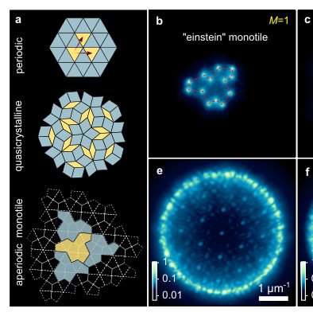
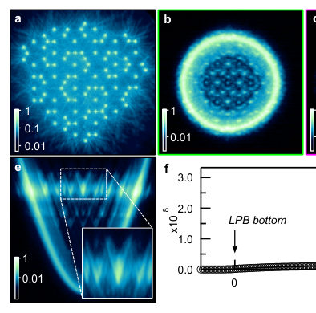
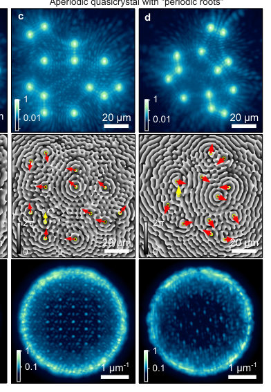
Summary. This paper reports the first experimental realization of an aperiodic polariton lattice using the recently discovered 'einstein' monotile. By sculpting these tiles in a GaAs microcavity, the authors demonstrate that the unique geometry leads to distinct spectral features and a complex phase-locking pattern unlike any periodic or conventional quasicrystalline system.
Why it may be interesting. This work is highly relevant for researchers in open quantum systems and many-body dynamics as it demonstrates how a programmable, driven-dissipative artificial material can use aperiodicity to engineer complex, non-trivial synchronization and spectral responses.
Main problem. The study aims to realize and investigate the physical properties of a newly discovered class of aperiodic quasicrystals composed of a single 'einstein' (hat) monotile, specifically focusing on how this unique geometry affects the propagation of coherent excitations and phase synchronization.
Main result. The researchers successfully imprinted 'einstein' monotile structures in an inorganic microcavity, observing six-fold symmetric Bragg peaks, Dirac-like spectral features, and a complex phase-locking pattern that is distinct from both periodic and Penrose quasicrystalline tilings.
Method. The study uses optical sculpting via a Spatial Light Modulator (SLM) to create the tiling, combined with energy-resolved momentum-space tomography and homodyne interferometry for phase reconstruction.
Model / system. The system is an inorganic GaAs-based microcavity hosting nonresonantly excited exciton-polariton condensates, modeled by the 2D Gross-Pitaevskii equation coupled to a reservoir rate equation.
Key observables. Bragg peaks, Dirac-like spectral fingerprints, real-space polariton density, and relative phases of the condensates.
Important parameters / regimes. Lattice constant (D) ranging from 22.6 to 27.2 micrometers, number of tiles (M = 1, 4, 13), and pump power relative to threshold (P approx 1.15 P_thr).
Assumptions / limitations. The study assumes the validity of the driven-dissipative Gross-Pitaevskii framework for describing the polariton dynamics in the microcavity.
Figures summary. Fig 1 compares different tiling geometries and shows real/reciprocal space PL for various tile numbers; Fig 2 presents 3D energy tomography and energy-resolved slices; Fig 3 compares phase locking patterns across periodic, Penrose, and 'einstein' lattices.
Paper structure. The paper introduces the concept of the 'einstein' monotile, describes the experimental setup and optical sculpting technique, presents the spectral and spatial results of the aperiodic tiling, compares the phase synchronization of the monotile to other lattices, and concludes with numerical validation.
A plethora of unconventional localization phenomena and fractal features of linear spectrum observed in quasiperiodic structures have been accompanied by a long-standing quest for the geometrical elements and structures that permit tilings of the plane, but only in a non-periodic manner. Until 2024, it was believed that such quasiperiodic structures, or quasicrystals, could only be composed of at least two different tiles. Surprisingly, a newly discovered class of quasicrystals requires only one elementary monotile. However, its physical realization and study of propagating coherent excitations in this novel setting remained elusive. Here we optically sculpt aperiodic quasicrystals composed of "einstein" monotiles in an inorganic microcavity and observe nontrivial relative phases of the exciton-polariton condensates nonresonantly excited at the vertices of each monotile. Utilizing energy-resolved tomography in momentum-space, we reveal the formation of distinct Bragg peaks with six-fold symmetry and Dirac-like spectral fingerprints, intrinsic to the underlying graphene-like structure, while interferometric phase reconstruction shows a nontrivial synchronization pattern distinct from both periodic triangular lattices and Penrose quasicrystals. Our work demonstrates that monotiles can be converted into a programmable driven-dissipative artificial material, where long-range coherence coexists with enforced geometric aperiodicity, producing synchronization and spectral responses distinct from both periodic and conventional quasicrystalline tilings.
Authors: Yongjae Oh, Euijoon Kwon, Yongjoo Baek
Type: both · Category: statistical mechanics · PDF: https://arxiv.org/pdf/2605.13509v1
Analysis basis: full PDF text, analyzed in chunks
Topic relevance: entanglement & information structure 3/5 · methods for driven-dissipative 3/5 · non-equilibrium dynamics 3/5 · correlated / nonlocal dissipation 2/5 · non-equilibrium universality 2/5 · quantum measurements 2/5
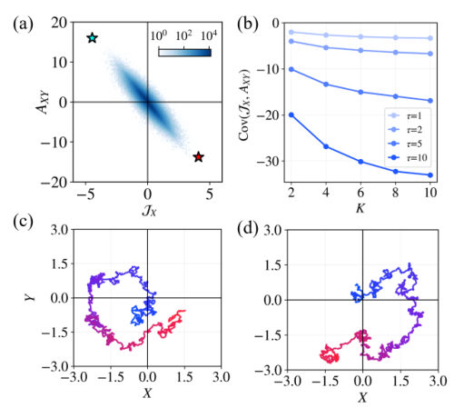
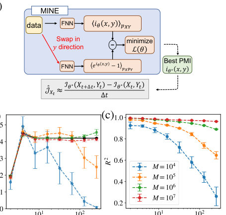
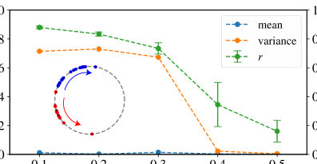
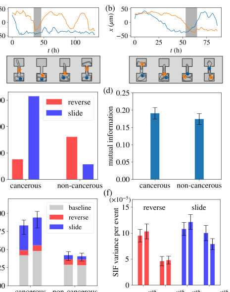
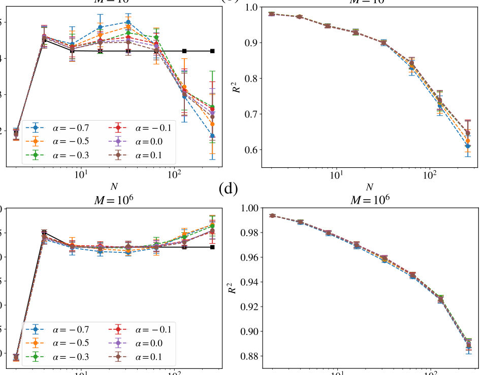
Summary. This paper introduces a scalable deep-learning method called NESIF to quantify directed information flow along individual stochastic trajectories. It overcomes the computational bottlenecks of traditional measures, allowing for the detection of hidden cooperative structures in complex systems like oscillators and biological cells. The method also establishes a formal link between information flow and stochastic thermodynamics.
Why it may be interesting. The development of scalable, data-driven tools to quantify non-equilibrium information flow and entropy production is highly relevant for studying the dynamics of open quantum systems and many-body fluctuations.
Main problem. Quantifying directed information exchange at the trajectory level (Stochastic Information Flow) and overcoming the computational 'curse of dimensionality' when estimating these flows from high-dimensional time-series data.
Main result. The authors propose NESIF, a scalable deep-learning method that accurately estimates SIF, and demonstrate its ability to identify cooperative structures in Kuramoto oscillators and differentiate between cancerous and non-cancerous cell dynamics.
Method. A neural estimation approach (NESIF) using artificial neural networks and alpha-divergence (alpha-MINE) to estimate Stochastic Mutual Information from time-series data.
Model / system. The study utilizes several models: a two-particle Langevin system of overdamped Brownian particles, an N-bead harmonic chain, noisy Kuramoto oscillators, and empirical trajectories of interacting motile human epithelial cells.
Key observables. Stochastic Information Flow (SIF), Stochastic Mutual Information (SMI), scaled variance of SIF, entropy production rates, and stochastic area.
Important parameters / regimes. Temperature (T), coupling stiffness (K), observation period (tau), alpha-divergence parameter (alpha), and number of particles/beads (N).
Assumptions / limitations. The current NESIF method assumes the system is in a steady state and that noise in bipartite Langevin dynamics is independent.
Figures summary. Figure 1 shows the anticorrelation between SIF and stochastic area with trajectory visualizations; Figure 2 validates the NESIF estimator using an N-bead model; Figure 3 and 6 analyze SIF statistics and synchronization in Kuramoto oscillators; Figure 4 compares information exchange in cancerous vs. non-cancerous cells.
Paper structure. The paper introduces the SIF concept, proposes the NESIF deep-learning estimator, validates it with analytical models (two-particle and N-bead), applies it to synchronization (Kuramoto), and finally demonstrates its utility on biological cell data.
Stochastic information flow (SIF) quantifies information flow at the trajectory level, overcoming the limitations of conventional symmetric, ensemble-averaged measures. However, computational difficulties have hindered the empirical application of the SIF. In this work, we propose a scalable deep-learning method for estimating the SIF from general time-series data. Its applications to an exactly solvable two-particle model, Kuramoto oscillators, and empirical trajectories of interacting motile cells demonstrate the utility of SIF as a data-driven indicator of cooperative structures.
Authors: R. M. de Boer, C. Toebes, Jan Klars, S. R. K. Rodriguez
Type: both · Category: statistical mechanics · PDF: https://arxiv.org/pdf/2605.13584v1
Analysis basis: full PDF text, analyzed in chunks
Topic relevance: driven-dissipative phase transition 3/5 · non-equilibrium dynamics 3/5 · quantum optics experiment 3/5 · non-equilibrium universality 2/5 · scars & prethermalization 2/5
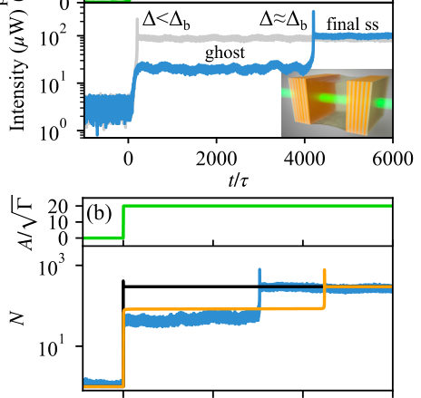
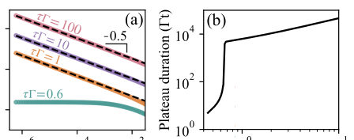
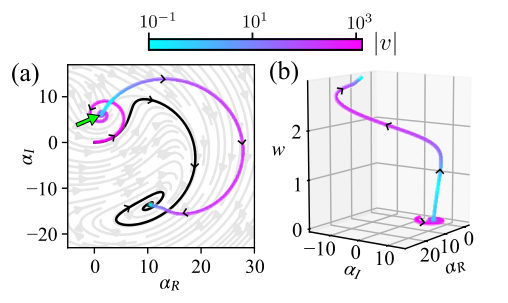
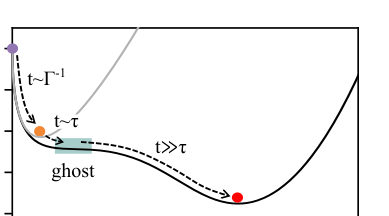
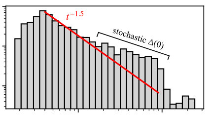
Summary. This paper demonstrates how a nonlinear system with memory can be used to trap light in a 'ghost state' near a bifurcation point. By using the thermal relaxation of olive oil, the authors show that trajectories can be steered into phase-space bottlenecks, creating extremely long-lived intensity plateaus.
Why it may be interesting. It provides a way to experimentally access and control long-lived transient states in non-equilibrium systems using memory-induced steering, which is highly relevant to open quantum systems and dissipative phase transitions.
Main problem. The challenge of experimentally observing and accessing 'ghost states'—long-lived, non-stationary bottlenecks in phase space that occur near a saddle-node bifurcation.
Main result. The researchers identified that a nonlinear response with memory can steer relaxation pathways into the bottleneck, enabling the observation of ghost states with lifetimes exceeding the cavity photon lifetime by over ten orders of magnitude.
Method. The study combines experimental measurements in a microcavity with numerical simulations using the xSPDE toolbox and an overdamped Langevin equation approach.
Model / system. A plano-concave Fabry-Perot microcavity filled with olive oil, which provides a thermo-optical nonlinearity with a time-delayed (memory) response, driven by a continuous-wave laser.
Key observables. Cavity transmission/intensity, plateau duration (ghost lifetime), and phase-space velocity.
Important parameters / regimes. Memory time (tau), laser-cavity detuning (Delta), dissipation rate (Gamma), and nonlinearity strength (U).
Assumptions / limitations. The simulations use a simplified memory time shorter than the experimental value to manage computational costs, and the 1D effective potential approximation assumes dynamics are primarily along the nullcline.
Figures summary. Fig 1 shows experimental and simulated transmission plateaus; Fig 2 displays scaling laws for plateau duration; Fig 3 illustrates relaxation trajectories in the complex plane; Fig 6 provides a parameter space map of the bifurcation.
Paper structure. Introduction to ghost states and the bottleneck problem, description of the experimental microcavity setup, presentation of the stochastic model and simulations, analysis of scaling laws and memory effects, and discussion of the implications for non-stationary states.
We report the observation of a long-lived non-stationary state of light in a single-mode optical cavity. The observed state is a ghost of a saddle-node bifurcation which creates a bottleneck in phase space. While such ghosts are known to exist, accessing them is challenging because it requires a mechanism that steers the relaxation pathway away from the true attractor and into the bottleneck where the ghost emerges. Here we identify such a mechanism, namely a nonlinear response with memory. Our experimental system leverages this mechanism, enabling us to observe ghost states with lifetimes exceeding the cavity photon lifetime by more than ten orders of magnitude, even in the presence of strong fluctuations. The ghost manifests as a plateau in the relaxation dynamics of the cavity transmission, reminiscent of prethermalization. We show how the ghost lifetime depends on the memory time and the distance to the bifurcation, and we observe signatures of scaling in the distribution of ghost lifetimes at fixed driving conditions. Our work establishes minimal conditions for realizing parametrically long-lived non-stationary states.
Authors: Xiang-You Huang, Jie-Yu Zhang, Peng Ye
Type: theory · Category: quantum information and computing · PDF: https://arxiv.org/pdf/2605.13379v1
Analysis basis: full PDF text, analyzed in chunks
Topic relevance: entanglement & information structure 3/5 · non-equilibrium dynamics 3/5 · non-equilibrium universality 3/5 · analog quantum simulation 2/5 · driven-dissipative phase transition 2/5
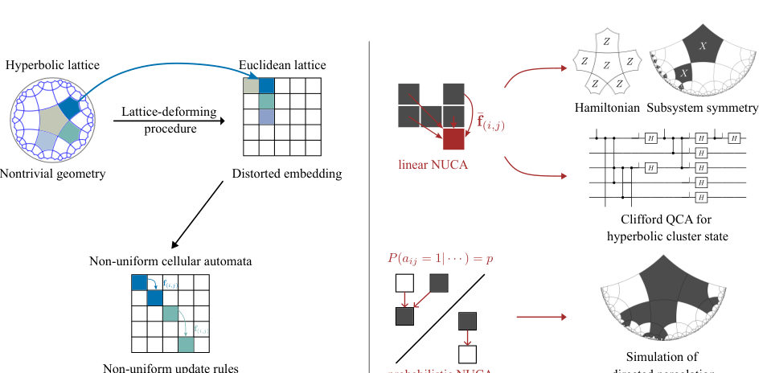
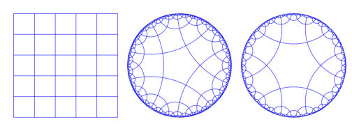
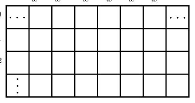
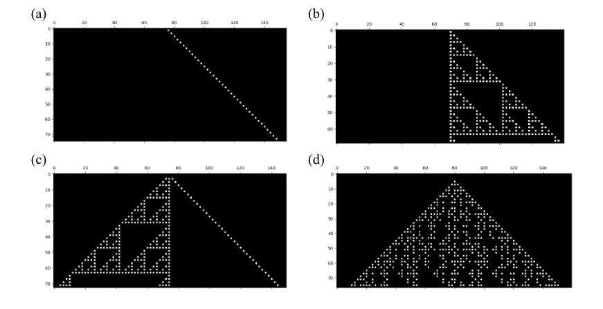
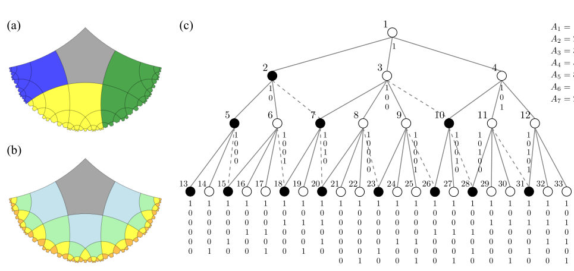
Summary. The paper introduces a universal algorithm for non-uniform cellular automata that works on both Euclidean and hyperbolic lattices. By using a lattice-deforming procedure, the authors successfully model complex physical phenomena such as subsystem symmetries and directed percolation in hyperbolic spaces.
Why it may be interesting. This work is highly relevant for many-body dynamics and quantum information as it provides a new mathematical framework to study topological order and phase transitions in non-Euclidean geometries, which could impact the development of hyperbolic quantum error-correcting codes.
Main problem. Standard uniform cellular automata (CA) are incompatible with hyperbolic lattices due to their non-Abelian translation symmetry and exponential growth, making it difficult to model physical phenomena like subsystem symmetries and directed percolation on these geometries.
Main result. The authors develop a universal higher-order non-uniform cellular automata (NUCA) algorithm that applies to both Euclidean and hyperbolic lattices, enabling the generation of subsystem symmetry-protected topological (SSPT) states and the simulation of directed percolation.
Method. A lattice-deforming procedure embeds hyperbolic lattices into Euclidean square lattices using a splitting method and coordinate-scaling functions to capture geometric data through non-uniform update rules.
Model / system. The study utilizes various models including linear NUCA, non-uniform Clifford quantum cellular automata (CQCA), and probabilistic NUCA applied to regular Euclidean and hyperbolic lattices (specifically {5,4} and {6,6} lattices).
Key observables. Subsystem symmetries (regular and irregular), subsystem symmetry-protected topological (SSPT) states, multi-point strange correlators, and directed percolation thresholds.
Important parameters / regimes. Lattice geometry (Schläfli symbols {p,q}), curvature, update rule order, and the probability parameter in probabilistic NUCA.
Assumptions / limitations. The algorithm assumes the ability to embed hyperbolic lattices into a Euclidean square lattice via a splitting method, which introduces geometric distortion that must be compensated for by the non-uniform rules.
Figures summary. Figure 1 provides a schematic of the NUCA algorithm and its applications; Figures 2-6 illustrate lattice geometries and the lattice-deforming procedure; Figures 14-22 show the construction of cluster states, symmetry patterns, and phase diagrams for directed percolation.
Paper structure. The paper begins by introducing the NUCA algorithm and the lattice-deforming procedure, then moves to applications in quantum topology (SSPT and CQCA), followed by applications in non-equilibrium statistical physics (directed percolation), and concludes with discussions on complex {6,6} lattices.
Lattice geometry profoundly shapes physical phenomena such as subsystem symmetry and directed percolation (DP). Among various lattice geometries, hyperbolic lattices are characterized by constant negative curvature and non-Abelian translation symmetry, offering a rich platform for investigating this geometry-physics interplay. However, the exponentially growing lattice size and nontrivial translation symmetry make approaches developed for Euclidean lattices incompatible, a limitation particularly evident in uniform cellular automata (CA). To resolve this, we develop a higher-order non-uniform cellular automata (NUCA) algorithm applicable to both translationally invariant regular Euclidean and hyperbolic lattices. In the algorithm, the non-uniform update rules incorporate nontrivial geometric data through a lattice-deforming procedure. We demonstrate the broad applicability of our algorithm to hyperbolic lattices through several applications on the hyperbolic $\{5,4\}$ lattice. By applying a linear NUCA, we generate subsystem symmetry-protected topological (SSPT) states and spontaneous subsystem symmetry-breaking states associated with regular or irregular subsystem symmetries unattainable on Euclidean lattices. We design the multi-point strange correlators to detect nontrivial SSPT states and derive a sufficient condition for non-Abelian translationally invariant NUCA-generated models. Furthermore, by generalizing the NUCA to non-uniform Clifford quantum cellular automata (CQCA), we generate subsystem symmetries of the hyperbolic cluster state, extending the established correspondence between translationally invariant CQCA and subsystem symmetries. Moreover, we simulate the DP process via a probabilistic NUCA that inherits the treelike structure of the lattice, and numerically estimate percolation thresholds and the phase diagram.
Authors: Andrea Marchetti, Daniel Maria Busiello, Giorgio Nicoletti
Type: theory · Category: statistical mechanics · PDF: https://arxiv.org/pdf/2605.13556v1
Analysis basis: full PDF text, analyzed in chunks
Topic relevance: correlated / nonlocal dissipation 3/5 · entanglement & information structure 3/5 · non-equilibrium dynamics 3/5 · methods for driven-dissipative 2/5
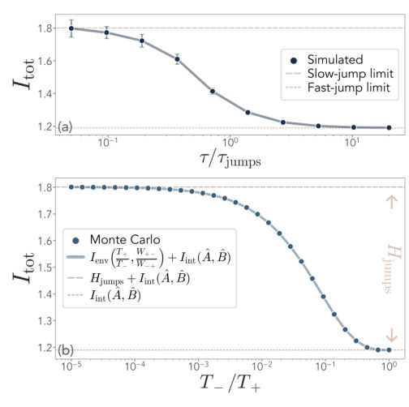
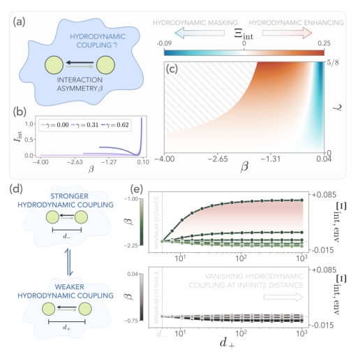
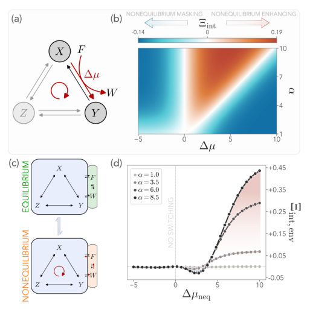
Summary. This paper explores how anisotropic noise and changing environments create 'information interference,' preventing the simple summation of individual physical contributions to a system's mutual information. By studying hydrodynamic and chemical systems, the authors demonstrate that these interplays can either enhance or mask statistical dependencies. This establishes a new way to quantify how complex environments shape information in stochastic processes.
Why it may be interesting. This work is highly relevant to open quantum systems and many-body dynamics as it provides a general information-theoretic perspective on how correlated noise and environmental fluctuations fundamentally alter the statistical dependencies and information flow in non-equilibrium systems.
Main problem. Investigating how non-diagonal noise (anisotropy) and stochastically switching environments lead to 'information interference,' where total mutual information cannot be decomposed into simple additive contributions from deterministic interactions, noise, and environmental changes.
Main result. The authors identify two sources of interference: a static term from the interplay between deterministic coupling and noise anisotropy, and a dynamic term from the interplay between internal processes and environmental switches. They also show that hydrodynamic interactions can either mask or enhance information depending on the degree of non-reciprocity.
Method. The study uses an information-theoretic framework based on Mutual Information (MI) and Kullback-Leibler divergence applied to multivariate Ornstein-Uhlenbeck processes, utilizing matrix decomposition and timescale separation (fast/slow-jump limits).
Model / system. The framework is applied to linearized stochastic systems, specifically including hydrodynamically coupled Brownian particles (using the Rotne-Prager-Yamakawa tensor) and fuel-driven chemical reaction networks modeled via the Linear Noise Approximation.
Key observables. Mutual Information (MI), Information Interference (static and dynamic terms), and entropy of the jump process.
Important parameters / regimes. Deterministic coupling strength (g), noise anisotropy (a), non-reciprocity (beta), environmental switching rates (tau_jumps), and chemical potential (delta_mu).
Assumptions / limitations. The analysis is restricted to linearized stochastic systems with Gaussian steady-state solutions and assumes the noise covariance matrix is positive definite.
Figures summary. Figure 1 shows MI estimates vs. the ratio of internal to environmental timescales; Figure 2 illustrates the setup of particles with hydrodynamic coupling and non-reciprocal forces; Figure 3 depicts a chemical reaction cycle with driving forces.
Paper structure. The paper introduces the concept of information interference, develops a mathematical framework for decomposing MI in the presence of non-diagonal noise and switching environments, and then applies this framework to three distinct physical cases: temperature switching, hydrodynamic interactions, and chemical reaction networks.
Stochastic forces in natural systems are rarely isotropic. From hydrodynamically coupled colloids to chemical reaction networks, noise contributions are inherently correlated. Together with internal interactions and changing environments, they shape the dependencies between the degrees of freedom of real-world systems, as quantified by their mutual information. In this work, we focus on linearized stochastic systems with both non-diagonal noise matrices and stochastically switching environments. We study how their presence leads to the emergence of information interference, so that the total mutual information cannot be decomposed as the sum of the contributions from deterministic interactions, noise anisotropy, and environmental switching alone. We identify two distinct sources of information interference: a static term, arising from the simultaneous presence of deterministic coupling and noise anisotropy; and a dynamic term, emerging from the interplay between internal processes and environmental switches. We then apply this framework to different physical systems. In the presence of switching temperatures, the mutual information disentangles exactly into internal and environmental contributions. When the noise anisotropy arises instead from hydrodynamic interactions, we find that the presence of a shared fluid can either mask or enhance the information stemming from a non-conservative force depending on its degree of non-reciprocity. Finally, in a fuel-driven chemical reaction network, we show that information interference is controlled by the non-equilibrium driving. These results establish a general information-theoretic perspective on how anisotropic noise and environmental variability shape statistical dependencies in stochastic systems.
Authors: Moslem Zarei
Type: theory · Category: other · PDF: https://arxiv.org/pdf/2605.12955v1
Analysis basis: full PDF text, analyzed in chunks
Topic relevance: Keldysh / 2PI / non-Gaussian methods 3/5 · entanglement & information structure 2/5 · methods for driven-dissipative 2/5 · non-equilibrium dynamics 2/5 · quantum measurements 2/5
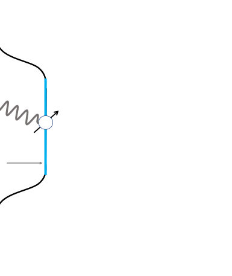
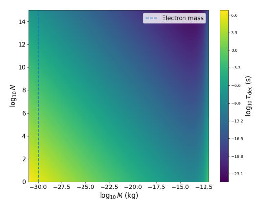
Summary. This paper proposes that the emission of gravitons (Bremsstrahlung) during particle motion provides a microscopic origin for wave function collapse. It demonstrates that while individual gravitational interactions are weak, the collective effect in large masses leads to rapid decoherence and the emergence of classical behavior.
Why it may be interesting. It provides a fundamental link between quantum field theory and the emergence of classicality, offering a microscopic derivation for the decoherence-induced suppression of superpositions that is central to the study of open quantum systems.
Main problem. Investigating whether the wave function collapse described by phenomenological models (like CSL or Diósi-Penrose) can be derived from a microscopic quantum field-theoretic framework, specifically through graviton-induced decoherence.
Main result. The paper derives a decoherence rate from graviton Bremsstrahlung that scales quadratically with the number of constituents and mass, providing a mechanism for the emergence of classicality in macroscopic systems.
Method. The author utilizes the Quantum Boltzmann Equation (QBE) and the S-matrix to analyze the interaction between a fermion and a graviton bath, applying the Born-Markov and weak-field approximations.
Model / system. A spin-1/2 fermionic spinor field in a spatial superposition interacting with soft graviton degrees of freedom (tensor field) via a graviton Bremsstrahlung process.
Key observables. The decay of the off-diagonal coherence element (rho_12) of the density matrix and the decoherence rate (Gamma).
Important parameters / regimes. Spatial separation (delta x), particle mass (m_f), gravitational coupling (kappa), number of constituents (N), and the graviton spectral density.
Assumptions / limitations. Weak-field limit of General Relativity, Born-Markov approximation, non-relativistic regime for the fermion, and an isotropic, unpolarized graviton bath.
Figures summary. Figure 1 illustrates the graviton Bremsstrahlung process for a fermion in superposition; Figure 2 is a contour plot showing decoherence time as a function of total mass and number of constituents.
Paper structure. The paper begins by defining the field operators and interaction Hamiltonian, progresses to constructing the QBE collision term, derives the decoherence rate and scaling laws, and concludes by discussing implications for collapse models and experimental tests.
Some collapse models proposed that gravitational effects cause the instability of mass distribution superpositions, leading to wave function collapse. In this paper, we utilize the quantum Boltzmann equation (QBE) to analyze the behavior of a fermion in a spatial superposition under graviton emission. We introduce a quantitative measure that links the stability of the superposition to the spatial separation, particle mass, and gravitational coupling. By examining the collision term in the QBE, we derive the decoherence rate and show how it depends on these parameters. Our results provide a detailed framework for understanding gravity induced decoherence, bridging the gap between quantum field theory and collapse models. We also discuss the implications of these findings for experimental tests of gravitationally induced wave function collapse and the broader class of collapse models known as dissipative continuous spontaneous localization (CSL) model.
Authors: Mikhail V. Petrenko, Anton K. Vershovskii
Type: both · Category: other · PDF: https://arxiv.org/pdf/2605.13466v1
Analysis basis: full PDF text, analyzed in chunks
Topic relevance: driven-dissipative phase transition 3/5 · non-equilibrium dynamics 2/5 · quantum measurements 2/5 · quantum optics experiment 2/5
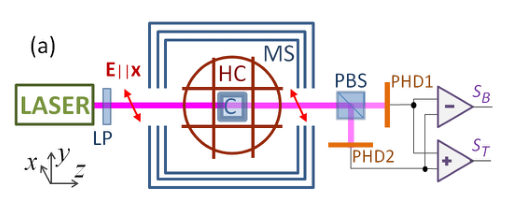
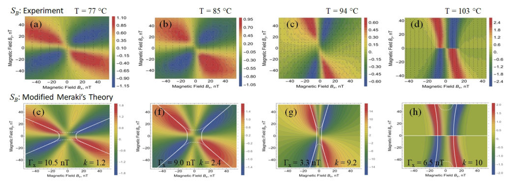
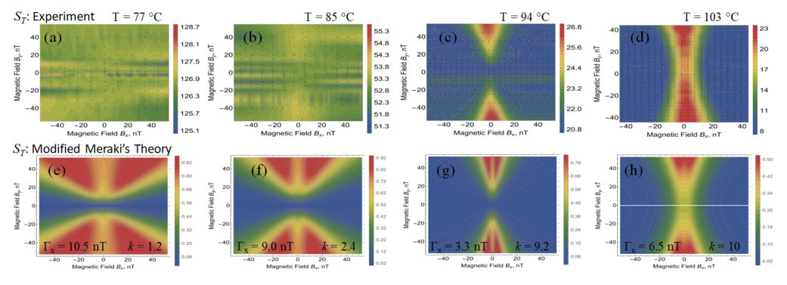
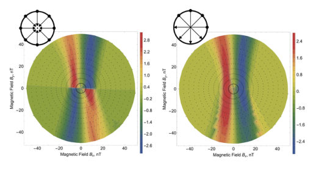
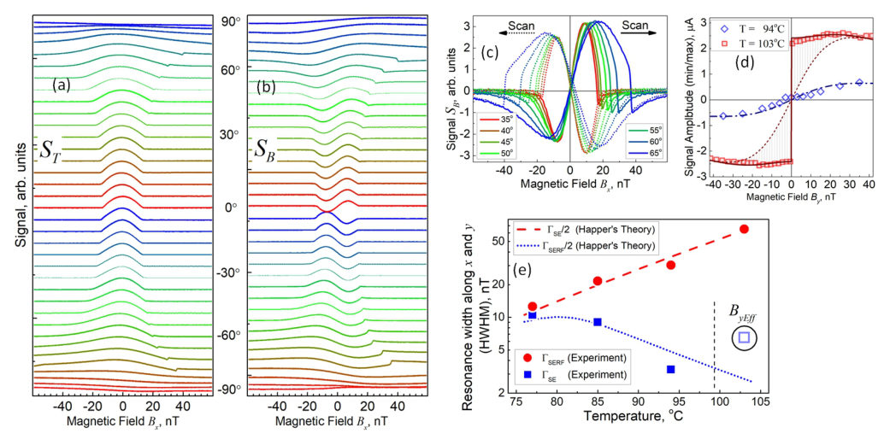
Summary. The paper investigates unexpected signal narrowing and nonlinear effects in cesium vapor under strong spin-exchange conditions. It demonstrates that these phenomena, including bistability and memory, stem from the spontaneous polarization of atoms. This discovery suggests a way to use atomic vapors as amplifiers for high-precision quantum sensing.
Why it may be interesting. It explores spontaneous symmetry breaking and nonlinear collective dynamics in an open quantum system, providing a geometric mechanism for signal amplification and ultra-narrow resonances relevant to quantum sensing.
Main problem. Investigating the origin of anomalous anisotropy, ultra-narrow resonance widths, and nonlinear phenomena like bistability and hysteresis in cesium vapor under strong spin-exchange conditions.
Main result. The study identifies that ultra-narrow alignment resonances arise from the projection of spontaneous transverse orientation onto the detection axis, effectively acting as an amplifier for alignment signals.
Method. Experimental 2D magnetic field mapping and polarization rotation measurements in Cs vapor, complemented by a theoretical model incorporating spontaneous polarization and nonlinear dynamics.
Model / system. Cesium (Cs) vapor in a nitrogen buffer gas at high pressure, operating in the Spin-Exchange Relaxation-Free (SERF) regime under linearly polarized optical pumping.
Key observables. Polarization rotation signal (Sb), transmission signal (St), alignment (quadrupole moment), and orientation (dipole moment).
Important parameters / regimes. Spin-exchange rate (Rse), Larmor frequency, temperature (77-103 C), and magnetic field components (Bx, By, Bz).
Assumptions / limitations. The theoretical model is a minimal version using only the lowest relevant tensor moments and treats spontaneous polarization as a coherent process without additional dissipation.
Figures summary. Figure 1 shows the experimental setup; Figure 2 displays polarization rotation signals at different temperatures; Figure 3 shows transmission signals; Figure 6 illustrates the formation of alignment components.
Paper structure. The paper introduces the anomalous anisotropy, describes the experimental setup and high-density regime, presents the observed nonlinearities (bistability/hystricsis), proposes a theoretical model based on spontaneous polarization, and concludes with the geometric interpretation of the signals.
We present the results of an experimental study of the anomalous anisotropy of alignment signals in cesium vapors under strong spin exchange conditions in zero magnetic fields under linearly polarized optical pumping. We show that the anisotropy of the Hanle resonances in the plane perpendicular to the pump beam increases sharply with increasing concentration. In one direction, the resonance widths are determined by classical spin exchange, while in the other, by the SERF (Spin-Exchange Relaxation Free) effect. With further concentration increases, additional nonlinear effects arise, such as an increase of the normalized signal amplitude, effective magnetic field, bistability, hysteresis, and memory. To explain these observations, as well as the results presented in our previous studies, we construct a demonstration theoretical model incorporating spontaneous polarization effects arising under strong spin exchange. The model qualitatively shows that the experimentally observed ultra-narrow alignment resonances may originate predominantly from quadrupole anisotropy associated with spontaneous transverse orientation projected onto the detection axis.The unique properties of these resonances, such as their ultra-small width and magnetic field-controlled bistability with a long-term memory effect, make them promising for use in quantum sensing and information.
Authors: Hang Zhou, Jia-Wei Huang, Chuan-Cun Shu
Type: theory · Category: other · PDF: https://arxiv.org/pdf/2605.12867v1
Analysis basis: full PDF text, analyzed in chunks
Topic relevance: methods for driven-dissipative 3/5 · non-equilibrium dynamics 3/5 · correlated / nonlocal dissipation 2/5
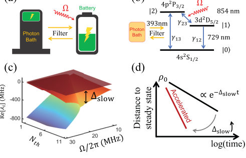
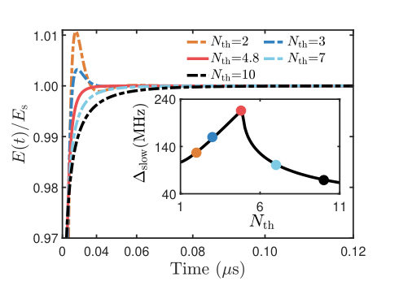
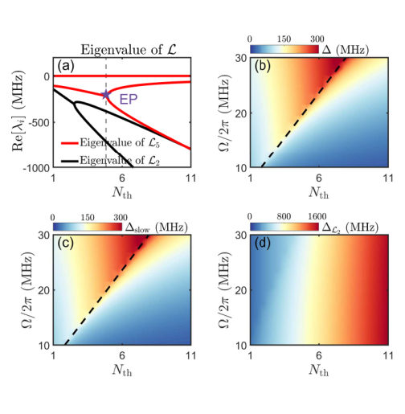
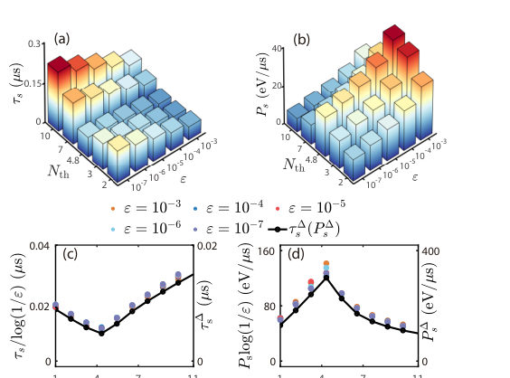
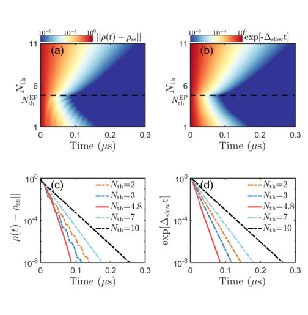
Summary. This paper shows that the charging speed of a quantum battery can be optimized by tuning the system's parameters to approach an exceptional point in its Liouvillian spectrum. By maximizing the spectral gap, the researchers achieve faster relaxation to the charged steady state. This approach provides a way to enhance energy storage efficiency using single-atom platforms like trapped ions.
Why it may be interesting. It provides a fundamental link between non-Hermitian physics (exceptional points) and quantum thermodynamics, offering a specific mechanism (spectral engineering) to accelerate dissipative processes without needing many-body effects.
Main problem. Optimizing the steady-state charging performance of quantum batteries by controlling the relaxation dynamics and the Liouvillian spectral gap in open quantum systems.
Main result. The researchers demonstrate that the asymptotic charging power can be significantly enhanced by engineering the Liouvillian spectrum to approach an exceptional point, which maximizes the spectral gap.
Method. Liouvillian spectral analysis using a Lindblad master equation, involving dimensionality reduction of the Liouvillian operator and investigation of eigenvalue coalescence.
Model / system. A three-level quantum battery model realized in a single trapped 40Ca+ ion, where energy is transferred from a thermal photon reservoir to a long-lived metastable storage state.
Key observables. Steady-state energy, relaxation time, average charging power, Liouvillian spectral gap, and l1 coherence.
Important parameters / regimes. Thermal photon occupation (Nth), coherent coupling strength (Rabi frequency Omega), decay rates, and detuning.
Assumptions / limitations. The dynamics are analyzed in the limit where the metastable state decay is much slower than other processes, allowing for a reduced-dimensional slow-sector description; use of Born-Markov and rotating-wave approximations.
Figures summary. Figure 2 shows the separation of the Liouvillian spectrum into slow and fast branches; Figure 6 compares steady-state properties like energy and coherence against charging power; Figure 7 demonstrates the robustness of the optimal charging regime across different convergence thresholds; Figure 8 shows the dependence of the spectral gap on detuning.
Paper structure. The paper introduces the quantum battery problem, defines the three-level ion model and Lindblad dynamics, performs a spectral decomposition of the Liouvillian to isolate slow-sector dynamics, analyzes the role of exceptional points in maximizing the spectral gap, and concludes with the robustness and implications for energy storage.
Quantum batteries, which use quantum systems to store and deliver energy, are promising for next-generation energy storage. However, optimizing charging strategies and understanding the interplay between dissipation and quantum coherence remain open challenges. Here, we investigate steady-state charging in an open quantum battery and demonstrate that the charging timescale depends on the spectral gap of the Liouvillian operator governing dissipative dynamics. As a minimal example, we examine a three-level quantum battery realized in a single trapped ${}^{40}\mathrm{Ca}^{+}$ ion, where energy from an engineered thermal photon reservoir is coherently transferred to a long-lived metastable storage state. We find that long-term dynamics are confined to a low-dimensional manifold of slow Liouvillian modes, with their spectral structure determining the relaxation rate to the charged steady state. By adjusting experimentally accessible parameters, such as reservoir occupation and coherent coupling strength, the non-Hermitian Liouvillian spectrum can approach an exceptional point. This increases the spectral gap and accelerates the approach to steady state. As a result, this mechanism significantly enhances asymptotic charging power without relying on many-body collectivity or steady coherence. Our findings offer fundamental insights into open quantum thermodynamics and provide a path to efficient energy storage and fast-charging solutions in emerging quantum technologies.
Authors: Arnob Kumar Ghosh, Ang Chen, Ashraf El Hassan, Patric Holmvall, Mohamed Bourennane, Annica M. Black-Schaffer
Type: both · Category: disordered systems and neural networks · PDF: https://arxiv.org/pdf/2605.13116v1
Analysis basis: full PDF text, analyzed in chunks
Topic relevance: analog quantum simulation 3/5 · quantum optics experiment 3/5 · non-equilibrium dynamics 2/5
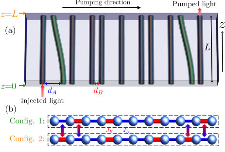
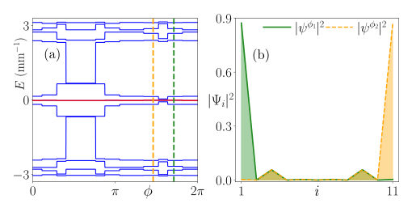
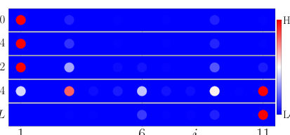
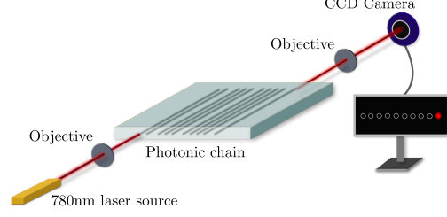
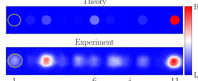
Summary. The researchers developed a simplified method to pump light from one end of a quasiperiodic photonic chain to the other by only adjusting two waveguides. This approach is highly robust against structural defects and avoids the need for complex, system-wide tuning. This discovery provides a viable platform for reliable state transfer in topological photonic networks.
Why it may be interesting. This work is relevant for quantum optics and many-body dynamics as it demonstrates a simplified, robust method for state transfer in quasiperiodic systems, which could serve as a blueprint for connecting non-neighboring elements in quantum networks or photonic circuits.
Main problem. The need for an efficient and robust end-to-end pumping protocol in topological systems that does not require continuous, fine-tuned control of all bond strengths along the entire chain.
Main result. Demonstrated that a localized pumping state can be transferred between opposite ends of a quasiperiodic Fibonacci-type photonic chain by modulating only two outer bonds, a process that remains robust against structural defects.
Method. The study uses a tight-binding formalism for numerical simulations and an experimental platform consisting of an array of coupled optical waveguides fabricated via femtosecond laser direct writing.
Model / system. A 1D quasiperiodic Fibonacci-type photonic chain implemented in an array of 11 coupled optical waveguides, where light propagation is described by a tight-binding Hamiltonian with coupling strengths determined by waveguide spacing.
Key observables. Light intensity distribution at the output facet, eigenvalue spectra as a function of the phason angle, and the excitation gap between the pumping state and adjacent eigenstates.
Important parameters / regimes. Number of waveguides (N=11), characteristic distances (dA=10 um, dB=7 um), phason angle (phi), and coupling strength (J=63.5 mm^-1).
Assumptions / limitations. The paraxial approximation is used to map Maxwell's equations to the Schrodinger equation, and waveguide diameters are assumed to be uniform to neglect onsite terms.
Figures summary. Fig 1 shows the waveguide array schematic and tight-binding representation; Fig 2 displays eigenvalue spectra and spatial distribution of the pumping state; Fig 4 shows the experimental setup; Fig 5 compares theory and experiment for light transfer; Fig 6 demonstrates robustness against structural defects.
Paper structure. The paper introduces the problem of efficient pumping, presents the numerical tight-binding model and the proposed simplified protocol, details the experimental waveguide fabrication and implementation, demonstrates successful end-to-end transfer, and concludes with tests of robustness against defects and future directions.
Topological pumps offer a promising route to operate as connecting buses, supplying efficient and robust connectivity between non-neighboring elements in a network. Here, we investigate a finite quasiperiodic Fibonacci-type photonic chain and demonstrate its ability for end-to-end pumping, with only small and simple changes to the system. First, we use a tight-binding formalism to numerically show that a localized pumping state can be transferred between opposite ends of the system, with only a small structural change to the chain. Then, we experimentally implement this topological pump in an array of coupled optical waveguides, where light propagation is effectively described by the tight-binding model under the paraxial approximation, enabling direct correspondence between theory and experiment. We numerically simulate and experimentally demonstrate pumping by injecting light into a single waveguide at one end of the setup, which activates a localized pumping state. As the light propagates along the wave guide array, it is also pumped to the other end. We further show that pumping remains robust against structural deformation, such as controlled defects in the waveguide array. Our results establish that quasiperiodic Fibonacci-type photonic lattices are a robust and experimentally viable platform for disorder-resilient state transfer.
Authors: Jian-Gang Kong, Jia-Ji Zhu, Z. Y. Xie
Type: theory · Category: numerical methods · PDF: https://arxiv.org/pdf/2605.12907v1
Analysis basis: full PDF text, analyzed in chunks
Topic relevance: Kondo & dissipative impurity 3/5 · entanglement & information structure 2/5 · non-equilibrium dynamics 2/5
Summary. This paper provides a comprehensive introduction and a new unified framework for Grassmann tensor networks. It demonstrates how to adapt standard tensor network algorithms to handle fermionic statistics locally, offering a promising route for simulating complex 2D fermionic systems and lattice gauge theories.
Why it may be interesting. It provides a powerful new toolkit for simulating fermionic many-body dynamics and 2D systems by bypassing the non-local string operators of Jordan-Wigner transformations and the sign problem of Monte Carlo.
Main problem. The paper addresses the need for efficient, non-perturbative numerical methods to study strongly correlated fermionic systems without the sign problem inherent in Monte Carlo simulations.
Main result. The authors establish a unified, self-contained framework for Grassmann tensor networks (GTNs) and demonstrate their validity through the 'Grassmannization' of standard algorithms like DMRG, TEBD, and CTMRG.
Method. The method utilizes Grassmann algebra within a coherent-state path-integral representation, allowing for local handling of fermion exchange statistics and sign factors.
Model / system. The framework is applied to various models including the Hubbard and t-J models, the Anderson impurity model, the honeycomb lattice t-V1-V2 model, and (1+1)D Gross-Neveu-Wilson models.
Key observables. Physical observables, partition functions, wave functions, particle density, and ground-state energy.
Important parameters / regimes. Bond dimension (D), environment dimension (chi), chemical potential (mu), and interaction strengths (t, J, V1, V2).
Assumptions / limitations. The validity of the contraction depends on matching parity of shared indices; the ordering of Grassmann variables is assumed to match the index ordering of the tensors.
Figures summary. Figure 1 shows the SVD decomposition of a Grassmann tensor; Figure 9 and 10 show convergence of energy and particle density in the t-V1-V2 model compared to DMRG data.
Paper structure. The paper follows a pedagogical progression: starting with the basics of Grassmann algebra and operations, moving to tensor network representations and 'Grassmannization' of algorithms, and concluding with numerical validation on various physical models.
Developing non-perturbative methods to reveal exotic properties of strongly correlated fermionic systems remains one of the most essential tasks of theoretical physics. Tensor network methods with Grassmann algebra offer powerful numerical tools for fermionic many-body systems in the coherent-state path-integral representation. Despite their vast potential for both condensed-matter and particle-physics communities, Grassmann tensor network methods are somewhat underexploited in practical simulations. In this work, we provide a detailed, self-contained introduction to Grassmann tensor network methods, from the basics of the Grassmann tensor operations to the Grassmannization of typical tensor network algorithms. Furthermore, the resulting Grassmann tensor network methods are validated in several interesting models in both particle physics and condensed matter physics.
Authors: Bhandaru Phani Parasar
Type: theory · Category: statistical mechanics · PDF: https://arxiv.org/pdf/2605.13606v1
Analysis basis: full PDF text, analyzed in chunks
Topic relevance: entanglement & information structure 3/5 · analog quantum simulation 2/5 · scars & prethermalization 2/5
Summary. The paper shows that the kinematic constraints of a gauge theory can act as a source for a Lieb-Schultz-Mattis theorem, preventing a trivial gapped ground state. By studying a Z2 x Z2 gauge theory, the authors identify a critical point described by free Dirac fermions with a central charge of c=1. This demonstrates that gauge-induced symmetries can fundamentally dictate the phase diagram of a quantum system.
Why it may be interesting. This work provides a novel mechanism for generating topological constraints (LSM theorems) from gauge-induced symmetries, which is highly relevant to the study of constrained dynamics and many-body physics.
Main problem. Investigating whether the kinematic constraints of a gauge theory (Gauss law) can generate a Lieb-Schultz-Mattis (LSM) type theorem.
Main result. The authors demonstrate that the Gauss law in a Z2 x Z2 gauge theory induces a U(1) symmetry that anticommutes with lattice reflection, thereby ruling out a trivial gapped ground state and forcing either gaplessness or spontaneous symmetry breaking.
Method. The study employs algebraic mapping of the gauge-constrained Hilbert space, Jordan-Wigner transformation to a fermionic representation, Toeplitz determinant analysis for correlations, and DMRG for numerical verification of the central charge.
Model / system. A one-dimensional periodic chain of spin-1 operators subject to a Z2 x Z2 gauge theory with a local Gauss law constraint.
Key observables. Ground state energy, bipartite entanglement entropy, central charge (c=1), and two-point correlation functions of gauge-invariant quantities.
Important parameters / regimes. Hopping amplitudes (t_alpha), potential strengths (K_alpha), and the thermodynamic limit (L -> infinity).
Assumptions / limitations. The derivation assumes periodic boundary conditions and relies on the validity of the Fisher-Hartwig conjecture for asymptotic correlation decay.
Figures summary. A plot of entanglement entropy versus subsystem size used to extract the central charge.
Paper structure. The paper begins by constructing the gauge theory and Gauss law subspace, moves to deriving the effective Hamiltonian and its symmetries, proves the LSM theorem via variational methods, analyzes the critical point using fermion mapping and Toeplitz determinants, and concludes with numerical verification via DMRG.
We construct a $\mathbb{Z}_2 \times \mathbb{Z}_2$ gauge theory coupled to matter on a one-dimensional chain, aiming to study the ground-state physics in the Gauss law subspace. We show that the theory in the Gauss law subspace has a U$(1)$ symmetry whose generator commutes with lattice translations, but anticommutes with the lattice reflection operator. This leads to a Lieb-Schultz-Mattis (LSM) theorem that always rules out a trivial gapped ground state in the Gauss law subspace, if the hamiltonian is invariant under translations and reflection. Any point in the parameter space must realize a either a spontaneously symmetry broken (SSB) ground state, or a gapless ground state. Imposing the Gauss law is pivotal for the existence of the U$(1)$ symmetry, and hence of the LSM theorem. We thus demonstrate a novel mechanism to obtain an LSM-type theorem, wherein the symmetry responsible for the theorem originates from the kinematic constraints of a gauge theory. We identify a point in the parameter space at which the system is gapless. At the gapless point, the excitations admit a description in terms of free Dirac fermions with a constraint on the total fermion number. The asymptotic behavior of the two-point correlation function of the simplest local gauge-invariant quantity at the gapless point is found to be $ \propto \cos{(πr)}\,r^{-2/9}$, where $r$ is the lattice separation between the two points. This model is also a natural platform to study phase diagram topological defects residing in families of SSB phases.
Authors: Yusheng Lei, Ran Ni
Type: theory · Category: statistical mechanics · PDF: https://arxiv.org/pdf/2605.13561v1
Analysis basis: full PDF text, analyzed in chunks
Topic relevance: non-equilibrium universality 3/5 · driven-dissipative phase transition 2/5 · non-equilibrium dynamics 2/5
Summary. This paper identifies a new type of 'metastable hyperuniformity' that appears near the edge of stability in discontinuous absorbing phase transitions. It demonstrates that this structural signature is a universal feature arising from the interplay of nonlinear activation and demographic noise, rather than specific microscopic rules.
Why it may be interesting. not directly relevant
Main problem. The study investigates whether structural order, specifically hyperuniformity, exists near discontinuous absorbing phase transitions and seeks to identify the underlying physical mechanism.
Main result. The authors discover a universal, metastable hyperuniform regime near the stability limit of discontinuous absorbing transitions, characterized by an anomalous scaling of the structure factor S(k) ~ k^1.2 in both 2D and 3D.
Method. The research employs numerical simulations of a facilitated Manna model and develops a minimal conserved Reggeon field theory using the Doi-Peliti formalism and mean-field analysis.
Model / system. The system is a facilitated Manna model on a d-dimensional lattice involving active and passive particles with a conserved total density, where activity is driven by a density-dependent facilitation mechanism.
Key observables. Structure factor S(k), active particle fraction (f_a), and the density field (rho).
Important parameters / regimes. The stability limit of the metastable active phase, the scaling exponent (1.2), and the dimensionality (2D and 3D).
Assumptions / limitations. The field theory derivation relies on an adiabatic approximation where the active density is treated as a fast variable slaved to the slow conserved field, and certain higher-order diffusive noise terms are neglected.
Figures summary. Fig 1(A) shows the model schematic; 1(B) shows the discontinuous jump in active fraction; 1(C) shows waiting time scaling; 1(D) shows the time evolution of active particles; 1(E/F) shows the structure factor scaling.
Paper structure. The paper introduces the problem of structural order in absorbing transitions, presents numerical evidence from a facilitated Manna model, develops a corresponding Reggeon field theory to extract the physical mechanism, and concludes with a noise hierarchy analysis.
Nonequilibrium hyperuniformity can arise either as a steady-state property of driven active fluids or as a critical signature at continuous absorbing transition points in two and three dimensions. Whether analogous structural order exists near discontinuous absorbing transitions, and what mechanism generates it, remains unclear. Here, we show that discontinuous absorbing transitions generically host a metastable hyperuniform regime near the stability limit. Using a facilitated Manna model without center-of-mass conservation, we find anomalous scaling $S(k\to0)\sim k^{1.2}$, which appears only near the metastable regime and disappears both deep in the active phase and in the absorbing phase. This scaling is robust in both two and three dimensions, in contrast to critical hyperuniformity at continuous absorbing transitions. We further formulate a minimal conserved Reggeon field theory that reproduces the same metastable hyperuniform regime and anomalous scaling, demonstrating that the phenomenon does not rely on microscopic update rules but arises from the interplay of nonlinear activation, multiplicative demographic noise, and conserved diffusive fluctuations. These results identify metastable hyperuniformity as a generic pseudo-critical structural signature of discontinuous absorbing transitions coupled to a conserved density.
Authors: Luis D. Zambrano Palma, Yusef Maleki, M. Suhail Zubairy
Type: theory · Category: quantum information and computing · PDF: https://arxiv.org/pdf/2605.13747v1
Analysis basis: full PDF text, analyzed in chunks
Topic relevance: entanglement & information structure 3/5 · Keldysh / 2PI / non-Gaussian methods 2/5 · quantum measurements 2/5
Summary. The paper proposes a nonlocal non-Gaussian photon addition protocol to enhance quantum illumination. It demonstrates that this method provides a significant advantage in target detection sensitivity and is more robust to photon loss and more resource-efficient than existing local non-Gaussian methods.
Why it may be interesting. This work is highly relevant to quantum optics and open quantum systems as it demonstrates how nonlocal non-Gaussian operations can engineer robust entanglement for sensing tasks in the presence of decoherence and loss.
Main problem. Enhancing the performance of Quantum Illumination (QI) for detecting weakly reflecting targets in noisy environments by improving upon standard Two-Mode Squeezed State (TMSS) and existing local non-Gaussian protocols.
Main result. The proposed Nonlocal Non-Gaussian Photon Addition (NLPA) protocol outperforms local non-Gaussian operations (PS, PA, PC) and the TMSS baseline, offering a significant SNR enhancement and superior robustness to photon loss while maintaining high success probabilities.
Method. The authors use continuous-variable quantum information theory, evaluating error probabilities via the Helstrom limit and Quantum Chernoff Bound, and benchmarking protocols using the error exponent ratio (gain parameter) and von Neumann entropy.
Model / system. A bipartite quantum illumination system consisting of a signal mode sent to a weakly reflecting target (low transmissivity kappa) and a retained idler mode, interacting with a thermal background environment.
Key observables. Error probability (Pe), Signal-to-Noise Ratio (SNR), von Neumann entropy (Ev), success probability (Psucc), and the gain parameter (G).
Important parameters / regimes. Target reflectivity (kappa), thermal photon number (n_th), squeezing parameter (r), beam splitter transmissivity (T), and photon loss (eta).
Assumptions / limitations. The target reflectivity is assumed to be very low (kappa << 1), the environment is modeled as a thermal state, and the large-K limit is approximated using the Quantum Chernoff Bound.
Figures summary. Fig 1 & 2 show protocol schematics; Fig 3 shows error probability vs. number of copies; Fig 4 shows gain ratio vs. transmissivity; Fig 6 shows error probability under different regimes; Fig 7 shows gain vs. transmissivity in lossless cases; Fig 8 & 9 show performance and gain under photon loss.
Paper structure. The paper introduces the QI problem, describes the NLPA and local non-Gaussian protocols, quantifies entanglement and success probability, compares detection performance (error probability and gain) in lossless and lossy regimes, and evaluates different receiver strategies.
Enhancing quantum illumination with highly entangled probes remains an active area of research. In this context, non-Gaussian operations provide an effective route for engineering probe states that can surpass the standard two-mode squeezed state (TMSS). In this work, we investigate a specific nonlocal non-Gaussian operation protocol and show that the engineered state using this protocol outperforms previously considered local non-Gaussian scenarios, engineered based on photon catalysis, addition, and subtraction under realistic conditions, including photon loss. Furthermore, by employing a $50{:}50$ beam splitter with photon-number difference detection, we demonstrate a significant enhancement in the signal-to-noise ratio (SNR) for target detection relative to the TMSS. Thus, our protocol exhibits improved performance, highlighting a resource-efficient and experimentally feasible probe for enhanced quantum illumination.
Authors: Yana Komissarova, Mikhail V. Fistul, Ilya M. Eremin
Type: theory · Category: quantum information and computing · PDF: https://arxiv.org/pdf/2605.13008v1
Analysis basis: full PDF text, analyzed in chunks
Topic relevance: non-equilibrium dynamics 3/5 · driven-dissipative phase transition 2/5 · methods for driven-dissipative 2/5
Summary. This paper explores how PT-symmetric non-Hermiticity can be used to enhance quantum adiabatic annealing. By introducing a small amount of gain and loss into a two-qubit system, the researchers show that the probability of reaching the target ground state can be significantly increased compared to the standard Hermitian case.
Why it may be interesting. It provides a novel way to use non-Hermitian physics (gain and loss) as a resource to improve the performance of quantum annealing protocols, which is highly relevant for open quantum systems and quantum control.
Main problem. Investigating whether introducing PT-symmetric non-Hermitian terms into the Hamiltonian can enhance the efficiency of Quantum Adiabatic Annealing (QAA) by mitigating the effects of small energy gaps.
Main result. The study demonstrates that adding even small PT-symmetric non-Hermitian terms can significantly enhance the probability of reaching the ground state during annealing, effectively mitigating Landau-Zener-Stuckelberg tunneling failures.
Method. Theoretical analysis of stationary and time-dependent Hamiltonians using a 4x4 matrix approach, reduction to an effective 2x2 model, and numerical solution of the time-dependent Schrodinger equation.
Model / system. A minimal model consisting of two interacting XX-coupled PT-symmetric non-Hermitian qubits subject to a time-dependent annealing Hamiltonian with a staggered imaginary longitudinal magnetic field.
Key observables. Probability of reaching the ground state (P_gr), population probabilities (P_up, P_down), and the energy spectrum (real and imaginary parts of eigenvalues).
Important parameters / regimes. Gain/loss parameter (gamma), annealing speed (k), qubit bias (epsilon), interaction strength (g), and transition amplitude (Delta).
Assumptions / limitations. The study uses a minimal two-qubit model, assumes all individual qubits are identical, and assumes the non-Hermitian part of the Hamiltonian remains constant during the annealing process.
Figures summary. Figure 1 shows a schematic of the two-qubit system; Figure 2 displays the real part of energy levels with color gradients for the imaginary part; Figure 5 shows energy differences in different PT phases; Figure 6 illustrates the failure of standard Hermitian QAA.
Paper structure. The paper introduces the problem of QAA efficiency, defines the non-Hermitian two-qubit model, analyzes the energy spectrum and phase transitions (PT-unbroken vs. broken), investigates time-independent and time-dependent dynamics, and concludes with the derivation of the enhanced success probability.
Quantum information platforms enable analog quantum simulations, such as quantum annealing, offering a promising route to solving complex combinatorial optimization problems. Here, we propose a quantum information architecture based on networks of interacting parity-time (PT)-symmetric non-Hermitian qubits. While the dynamics of individual PT-symmetric qubits have been experimentally demonstrated across multiple platforms including NV centers, superconducting circuits, and trapped-ion systems yet coherent dynamics in interacting systems remain largely unexplored. To address this issue we theoretically investigate stationary and time-dependent Hamiltonians relevant to quantum annealing using a minimal model of two interacting XX-coupled PT-symmetric non-Hermitian qubits. We analyze both symmetry-preserving and symmetry-broken regimes and demonstrate that adding even tiny PT-symmetric non-Hermitian terms in the qubits Hamiltonian allows to greatly enhance the probability of reaching the ground state after annealing.
Authors: Zhaoyu Fei, Yu-Han Ma
Type: theory · Category: statistical mechanics · PDF: https://arxiv.org/pdf/2605.13685v1
Analysis basis: full PDF text, analyzed in chunks
Topic relevance: non-equilibrium dynamics 3/5 · methods for driven-dissipative 2/5
Summary. This paper demonstrates that the Berry phase induces a chiral asymmetry in the work performed on an open quantum system. While quantum interference fringes disappear in the presence of strong decoherence, a robust, 'fringe-free' chiral work signal remains. This finding clarifies how quantum geometry influences the geometric formulation of thermodynamics in dissipative environments.
Why it may be interesting. It provides a fundamental link between quantum geometry and irreversible thermodynamics, showing that the thermal bath can actually act as a mechanism to encode geometric information into measurable, robust thermodynamic quantities.
Main problem. Investigating the thermodynamic role of the Berry phase in open quantum systems and determining if geometric signatures persist or are erased by decoherence.
Main result. The authors discover a Berry-phase-induced chiral work difference that survives decoherence, transitioning from an oscillatory 'interferometric' signal in the unitary regime to a robust, fringe-free signal in the dissipative regime.
Method. The study employs a Dissipative Adiabatic Perturbation Expansion (DAPE) framework to expand off-diagonal coherences in terms of an adiabaticity parameter.
Model / system. An open quantum system (specifically a two-level system) driven by time-dependent control parameters and weakly coupled to a thermal bath, following a Born-Markov master equation.
Key observables. Average work (W), chiral work difference (delta W), and thermodynamic length (L).
Important parameters / regimes. Adiabaticity parameter (epsilon), driving frequency (Omega), relaxation/dephasing rates (gamma), and the Berry phase (Phi).
Assumptions / limitations. The system is in the slow-driving (adiabatic) regime, the Lamb shift is neglected, and population differences are treated as approximately constant to leading order.
Paper structure. The paper introduces the problem of geometric phases in thermodynamics, develops the DAPE framework, decomposes work into metric and Berry-phase contributions, demonstrates the discovery of chiral work, and validates the theory using a two-level system and NMR-like parameters.
Geometric phases are foundational to isolated quantum systems, yet their thermodynamic role in open systems remains unrevealed Developing a dissipative adiabatic perturbation expansion, we discover a Berry-phase-induced chiral work difference that survives decoherence. This chirality evolves from an interferometric thermodynamic Aharonov-Bohm effect in the unitary regime to a fringe-free signal in the dissipative regime. We illustrate this framework in a two-level system and assess its experimental feasibility. Our findings clarify the role of quantum geometry in the geometric formulation of thermodynamics.
Authors: Johanne Bratland Tjernshaugen, Florinda Viñas Boström, Jeroen Danon, Jacob Linder, Karsten Flensberg, Antonio L. R. Manesco
Type: theory · Category: quantum information and computing · PDF: https://arxiv.org/pdf/2605.12588v1
Analysis basis: full PDF text, analyzed in chunks
Topic relevance: spintronics-quantum-optics interface 3/5 · correlated / nonlocal dissipation 2/5
Summary. The paper proposes a new qubit architecture called a 'spinmon' that uses the entanglement between a transmon and an Andreev spin to bypass the typical noise-protection tradeoff. It demonstrates that this qubit can be controlled via electrostatic and magnetic means while maintaining high robustness against common decoherence channels. This provides a potential pathway for more stable superconducting quantum computing hardware.
Why it may be interesting. It presents a novel way to engineer protected subspaces in a hybrid system, which is highly relevant for researchers working on open quantum systems and the design of noise-resilient quantum architectures.
Main problem. The paper addresses the fundamental tradeoff in superconducting qubits where protecting against one noise source (like relaxation) often increases sensitivity to others (like dephasing).
Main result. The authors demonstrate that a 'spinmon' qubit, which encodes information in entangled states of a transmon and an Andreev quasiparticle spin, allows for coherent control via gate voltage and flux while remaining robust against charge and flux noise.
Method. The study uses a combination of analytical approaches, such as a harmonic oscillator approximation for potential wells and Fermi's Golden Rule for relaxation rates, alongside numerical Hamiltonian diagonalization.
Model / system. The system is a 'spinmon' consisting of a capacitively shunted Andreev spin qubit (ASQ) in parallel with a gate-tunable, even-parity mesoscopic Josephson junction, incorporating spin-orbit coupling and a Zeeman field.
Key observables. Qubit splitting (omega_q), Rabi driving/rotation rates, relaxation rates (Gamma), and coherence times against flux and charge noise.
Important parameters / regimes. Energy scales: E0 = E_SO = 500 MHz, Ec = B = 40 MHz; Temperature: 10 mK; Regime: heavy transmon limit (Ec << E0).
Assumptions / limitations. The potential wells are approximated as harmonic oscillators in the heavy transmon limit; noise is modeled using 1/f spectral density for flux and charge.
Figures summary. Figure 1 shows a schematic of the spinmon setup and the potential landscape; Figure 2 illustrates the dependence of spin-orbit modulation and qubit control parameters.
Paper structure. The paper introduces the spinmon concept and the noise tradeoff problem, describes the physical Hamiltonian and system components, details the analytical and numerical methods for control and decoherence, and concludes with a discussion on noise robustness and experimental implementation.
The protection of superconducting qubits from certain noise sources often comes at the cost of increased sensitivity to other decoherence channels. Here, we explore a route to avoid this tradeoff by encoding quantum information in quantum states of a transmon entangled with the spin of a trapped Andreev quasiparticle. We term such devices spinmons. We lift the spinmon Kramers degeneracy by introducing a Zeeman field and develop two routes for full qubit control via electrostatic gates and an AC flux drive, providing multiple directions for experimental implementations. Finally, we compute coherence times and verify the qubit robustness against flux and charge noise sources.
Authors: Joshua M. Courtney
Type: theory · Category: quantum information and computing · PDF: https://arxiv.org/pdf/2605.12656v1
Analysis basis: full PDF text, analyzed in chunks
Topic relevance: methods for driven-dissipative 3/5 · non-equilibrium dynamics 2/5
Summary. This paper provides a definitive analysis of Multivariate Quantum Signal Processing for non-Hermitian systems, establishing tight bounds on query complexity and identifying fundamental barriers to simulation. It also introduces efficient algorithms for angle-finding and demonstrates how to handle time-dependent non-Hermitian Hamiltonians.
Why it may be interesting. It provides fundamental limits and algorithmic improvements for simulating dissipative and non-Hermitian dynamics, which are central to open quantum systems, quantum optics, and Lindbladian evolution.
Main problem. Resolving open problems in Multivariate Quantum Signal Processing (M-QSP) for non-Hermitian Hamiltonian simulation, specifically regarding query complexity, optimization landscapes, and fundamental simulation barriers.
Main result. The paper proves the tightness of anti-Hermitian query complexity, identifies the existence of spurious local minima in the optimization landscape, and establishes a three-tier hierarchy of simulation barriers.
Method. The study employs polynomial approximation theory, Chebyshev coefficient bounds, and L-BFGS-B optimization, alongside numerical surveys of random Hamiltonian ensembles (GUE and Wishart).
Model / system. The model focuses on the simulation of non-Hermitian effective Hamiltonians H_eff = H_R + iH_I, where H_R and H_I are Hermitian, using a bivariate quantum signal processing framework and a walk-operator oracle.
Key observables. Query complexity (d_I, d_R), spectral abscissa (omega), normalization factor (lambda), and the advantage factor (e^{2(beta_I - omega)T}).
Important parameters / regimes. Simulation time (T), error tolerance (epsilon), Hermitian norm (alpha_R), anti-Hermitian norm (beta_I), and the spectral-abscissa ratio (omega/beta_I).
Assumptions / limitations. The analysis assumes a walk-operator oracle model for the primary complexity bounds and considers both commuting and non-commuting regimes of H_R and H_I.
Figures summary. Figures illustrate the mean spectral-abscissa ratio across different dimensions, the exponential scaling of the advantage factor, and the convergence rates of the optimizer.
Paper structure. The paper begins by addressing complexity and tightness of bounds, moves to analyzing the optimization landscape and angle-finding efficiency, extends the framework to time-dependent Hamiltonians, and concludes with a hierarchy of fundamental simulation barriers.
Multivariate quantum signal processing (M-QSP) has recently been shown to be applicable for non-Hermitian Hamiltonian simulation, opening several problems regarding the optimization landscape, angle-finding, and constant-factor analysis. We resolve several of these problems here. We find the anti-Hermitian query complexity $d_I = Θ(\betaI T + \log(1/\varepsilon)/\log\log(1/\varepsilon))$ to be tight, established via Chebyshev coefficient bounds, modified Bessel function asymptotics, and Lambert~$W$ inversion. Fast-forwarding to $d_I = \mathcal{O}(\sqrt{\betaI T})$ is impossible in the bivariate polynomial model, though a linear state-dependent improvement to $d_I = \mathcal{O} β_{\mathrm{eff}} T + \log(1/\varepsilon)/\log\log(1/\varepsilon))$ is achievable. The optimization landscape of M-QSP admits spurious local minima, but a warm-start basin guarantee ensures the two-stage algorithm converges. CRC-exploiting block peeling reduces angle-finding from $\mathcal{O}(d^3)$ to $\mathcal{O}(d^2)$ classical operations, and optimized error allocation yields a leading constant of approximately~$2$ relative to the information-theoretic lower bound. A constant-ratio condition extends to non-identical signal operators, enabling time-dependent non-Hermitian simulation with query complexity $\mathcal{O}(\int_0^T(\alphaR(s) + \betaI(s))\,ds + \log(1/\varepsilon)/\log\log(1/\varepsilon))$. Block-encoding overhead $e^{-2\betaI T}$ holds across all function classes within the walk-operator oracle model, and dilational methods (Schrödingerization) achieve the walk-operator barrier. A precisely characterized direct-access construction achieves the intrinsic barrier $e^{-2ωT}$ (with $ω< \betaI$ for non-commuting Hamiltonians) on a restricted domain, though extension to the full bitorus remains open.
← Index · ← Previous · Next →